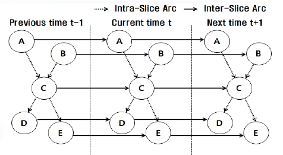

Обнаружение аномалий во временных рядах¶
Обзор¶
В applybn обнаружение аномалий во временных рядах основано на особом типе байесовских сетей —
динамических байесовских сетях. Они предназначены для работы с временными рядами.

Пример динамической байесовской сети. Источник: статья
Обучение таких сетей очень ресурсоемко, поэтому используется другой подход из статьи Outlier Detection for Multivariate Time Series Using Dynamic Bayesian Networks.
Warning
Метод, реализованный в applybn, работает только с дискретными MTS (многомерными временными рядами), поэтому пользователь должен предварительно обработать их
любым методом дискретизации (SAX, биннинг и т.д.).
Математическая основа¶
Основная структура динамических байесовских сетей¶
ДБС расширяет байесовскую сеть (БС), вводя время в качестве явной переменной. Ключевые компоненты:
Временные срезы¶
ДБС состоит из повторений базовой байесовской сети на дискретных временных шагах (\(t=0, t=1, ..., t=T\)). Каждый временной срез содержит те же переменные, но с изменяющимися вероятностями.
Зависимости внутри и между срезами¶
- Ребра внутри среза (в пределах одного временного шага) моделируют одновременные взаимосвязи (например, \(X_t \rightarrow Y_t\)).
- Ребра между срезами (между временными шагами) моделируют временные зависимости (например, \(X_t \rightarrow X_{t+1}\)).
2-временная байесовская сеть (2-TBN)¶
Компактное представление, где полная ДБС "разворачивается" из шаблона на 2 среза. Определяет модель перехода: - Априорная сеть (\(t=0\)): начальное распределение состояний. - Сеть переходов (\(t \rightarrow t+1\)): как переменные развиваются.
Ключевые допущения в ДБС¶
Марковское допущение¶
-
Будущее независимо от прошлого при заданном настоящем: \( P(X_{t+1} | X_t, X_{t-1}, ..., X_0) = P(X_{t+1} | X_t) \)
-
Зависимости более высокого порядка могут быть смоделированы путем увеличения порядка Маркова.
Стационарность (инвариантность во времени)¶
- Вероятности перехода (\(P(X_{t+1}|X_t)\)) не изменяются со временем.
Факторизованное представление состояния¶
- Состояние системы представлено несколькими переменными (например, \(X_t, Y_t, Z_t\)), каждая со своей собственной динамикой.
Обучение ДБС¶
Обучение параметров¶
При заданной структуре обучаются CPT (таблицы условных вероятностей) по данным. Методы:
- Оценка максимального правдоподобия (MLE)
- Байесовская оценка параметров (с априорными распределениями Дирихле)
Обучение структуре¶
Обучаются как межсрезовые, так и внутрисрезовые зависимости. Методы:
- На основе оценок (BIC, AIC)
- На основе ограничений (алгоритм PC, адаптированный для времени)
Метод в applybn¶
applybn реализует другой подход к обучению структуры. Вместо дорогостоящих вычислений он использует
алгоритмы для поиска минимального остовного дерева.
Оно определяется следующим образом:
Минимальное остовное дерево (MST) или минимальное весовое остовное дерево — это подмножество ребер связного, взвешенного по ребрам неориентированного графа, которое соединяет все вершины вместе, без циклов и с минимально возможным общим весом ребер. -- Википедия
Warning
Для любой байесовской сети существует строгое ограничение ацикличности. Если в байесовской сети есть циклы, определенно что-то пошло не так.
Этот алгоритм состоит из следующих шагов:
- Построить полный граф с марковским лагом \(m\), байесовские сети внутри срезов также являются полными.
- Вычислить веса для каждого ребра с помощью локального LL, величины, которая измеряет, насколько хорошо условное вероятностное распределение узла соответствует наблюдаемым данным, при заданных его родителях.
Начальный временной срез (\( t=0 \)) (так же, как в статической БС).
\(\mathcal{L}_X^{(0)}(\theta_X | \mathcal{D}) = \sum_{i=1}^{N} \log P(X_0 = x_0^{(i)} | \text{Pa}(X_0) = \text{pa}_0^{(i)}, \theta_X)\)
Срезы переходов (\( t \geq 1 \)). Логарифмическое правдоподобие для узла \( X \) в момент времени \( t+1 \) зависит от его родителей в момент времени \( t \).
\( \mathcal{L}_X^{\text{trans}}(\theta_X | \mathcal{D}) = \sum_{t=0}^{T-1} \sum_{i=1}^{N} \log P(X_{t+1} = x_{t+1}^{(i)} | \text{Pa}(X_{t+1}) = \text{pa}_{t+1}^{(i)}, \theta_X) \)
где:
- \( T \) - общее количество временных шагов,
- \(\mathcal{D}\) - набор данных
- \( \text{Pa}(X_{t+1}) \) может включать как внутрисрезовых, так и межсрезовых родителей.
- \(\theta_x\) - параметры условного распределения.
Родители были взяты как:
<...> до p родителей из предыдущих m временных срезов и лучший родитель из временного среза t.
Обратите внимание, что родители берутся в том порядке, в котором они появляются в алгоритме максимального ветвления.
После получения полного графа применяется алгоритм максимального ветвления, и результатом является структура для ДБС.
Для оценки параметров используется MLE.
Обнаружение аномалий с помощью tDBN¶
Существует несколько способов обнаружения аномалий по оценкам. Рассмотрим набор данных с формой (1000, 56) и матрицу оценок размером (10, 1000), где 10 — это количество переходов, а 1000 — количество субъектов. Для каждого перехода есть мера аномальности (например, первый элемент содержит аномальность в переходе от \(X\) к \(X_{t + 1}\)).
Эти оценки могут быть пороговыми с помощью abs_threshold и rel_threshold. Первый создает бинарную матрицу с
формой (10, 1000). Затем rel_threshold (число от 0 до 1) показывает, сколько раз субъект демонстрировал аномальное
поведение, и с какой доли считается аномалия.
Note
Вы можете увеличить чувствительность, увеличив rel_threshold и уменьшив abs_threshold.
Спецификация формата данных¶
Чтобы использовать FastTimeSeriesDetector, ваши данные должны иметь
следующий формат:
где
- subject_id — это отдельный субъект (могут быть датчики, люди и т.д.).
- Каждый столбец — это признак временного среза с именем feature_name__index (
__обязательно!).
Пример¶
from applybn.anomaly_detection.dynamic_anomaly_detector.fast_time_series_detector import (
FastTimeSeriesDetector,
)
import pandas as pd
import numpy as np
from sklearn.metrics import f1_score
def add_anomalies(df, anomaly_fraction=0.05, random_state=None):
if random_state is not None:
np.random.seed(random_state)
df_anomaly = df.copy()
total = df.shape[0]
# Initialize label matrix with zeros
anomaly_labels = np.zeros(total, dtype=int)
n_anomalies = int(df.shape[0] * anomaly_fraction)
# Generate random positions
rows = np.random.randint(0, df.shape[0], size=n_anomalies)
for row_idx in rows:
new_value = np.random.choice(["a", "b", "c"], size=df.shape[1] - 1)
anomaly_labels[row_idx] = 1
df_anomaly.iloc[row_idx, 1:] = new_value
return df_anomaly, anomaly_labels
df_discrete = pd.read_csv(
"../../data/anomaly_detection/ts/meteor_discrete_example_data.csv"
)
df_anomaly, anomalies = add_anomalies(
df_discrete, anomaly_fraction=0.1, random_state=42
)
detector = FastTimeSeriesDetector(markov_lag=1, num_parents=1)
detector.fit(df_anomaly)
detector.calibrate(anomalies)
preds_cont = detector.predict(df_anomaly)
print(f1_score(anomalies, preds_cont)) # 0.7352941176470589 (may vary)